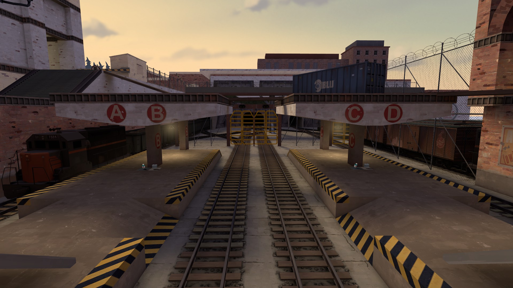
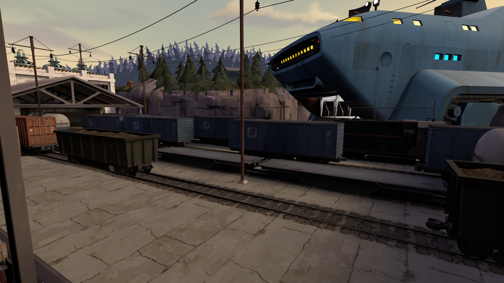
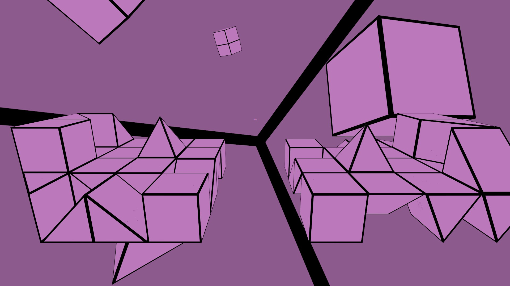
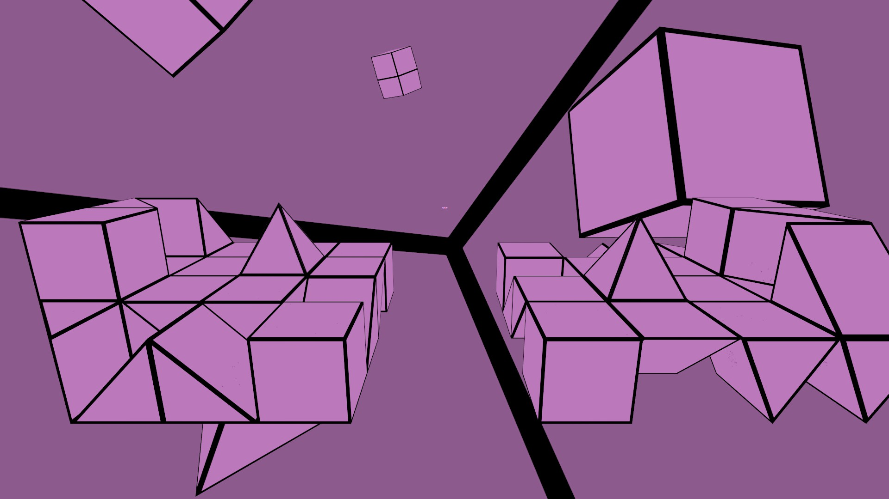

Hi, my name is Connor Rowland. I am profoundly deaf, and use cochlear implants to hear.
Spoken language can be difficult in some situations, but one reason I love coding is that computer languages seem to come naturally to me!
To further develop my knowledge, I studied Computer Science at the University of Brighton.
I’ve been intrigued by the inner workings of games since childhood, particularly how design, logic, and interaction integrate seamlessly.
I'm eager to be part of the development world and contribute to meaningful, which is how I started it back in 2016 with configuration and map designing before moving on to programming.
Since then, I’ve consistently advanced my technical skills through self-directed learning and hands-on experience.
Founders and Coders
I'm currently in Founders and Coders's Cohort since February 2025, collaborating with groups to create websites as a project.
Stonewaters Library
Using Node.js with Express, recommendations books solely on input and books liked/disliked, alongside with an inbox and friends feature. - GitHub
Local Event
Using Deno and Vite, Lists the local events happening at London as more gets auto-added. Includes encrypted login, favourites, and admin rank to edit - Frontend | Backend | Shared
redsun.tf
One of my key projects is for a community hub redsun.tf, used by many players to trade and customize their game.
I'm one of two lead developers, building both the frontend and backend using Django from Python.
It’s been incredibly rewarding to see players benefit from my work, and the project has sharpened both my coding and community engagement skills.
I spent a few months building the Metrolands Map — a dynamic, limited-time experience where users explored metro lines, spent credits to unlock paths, and navigated live obstacles.
The map evolved in real time, showing others’ movements.
Art by OctaSun, with whom I closely collaborated to unify visuals, code, and layout.
Games
Making and developing games has always been my passion for programming, with a few small website games I had made in my spare time.
Odd
One
Out
A fast and furious odd-one-out logic game to play, figure out which one of the shape is different to all others, it took about 30 hours to make.
Sudoku
Problem solving Sudoku, to fill in the grid with the numbers 1–9, without repeating any numbers in a row, column, or 3x3 square.
Memory
One of the first website game i've made, a simple Memory game with a timer, and no ending on how far you can go.
SourcePawn
Since late 2018, I've actively created and maintained many plugins using SourcePawn language, similar to C++
Randomizer - Game randomizes what loadout player has to play, including combinations where its normally not possible to do
VScript - useful libary that allows other plugins to make use of VScript features
Versus Saxton Hale - One man, Saxton Hale, has a task to kill everyone else in a One versus All match
Super Zombie Fortress - Group of survivors only have one life to reach the end of the map, facing a horde of zombies.
Maps
From 2016 to 2018, and still a little to this day, I've developed several maps for Team Fortress 2 community, each for different gamemode, themes, and gimmicks.
I tried to give each map its own unique gameplay and gimmick to differ from many other maps that had been made.
Trainyard
Burgstadt
Shapes
Select image for more info
Buffer
Trainyard
It's a yard full of trains, simple enough? For a Mann vs Machine gamemode, area occasionally get trains passing through the area, but there can be enemy trains stopping by to help enemy robots make use of it to take a shortcut!


Burgstadt
Orginally for Mann vs Machine, it later get converted for GunGame. Set in a medieval market town, players face eachother for a deathmatch where only one can win.
Shapes
In a mysterious place, two islands for two teams face eachother a Dodgeball deathmatch, with the changing map every round on different color, shape, layout, and maybe even a gimmik.


 
